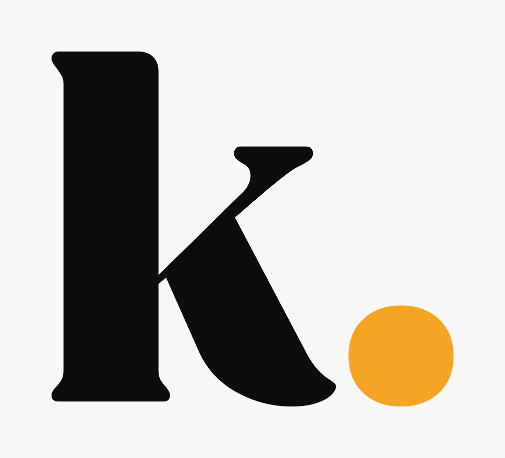

Die Marke.
Wortmarke, Zeichen und Favicons — so, wie sie geliefert wurden. Alles Vektor, alle Farben aus dem Markensatz. Die Wortmarke steht in der Navigation, im Lader und gross in der Fusszeile.
Wortmarke

Positiv — auf hellen Flächen. Steht so in der Navigation.

Negativ — auf dunklen Flächen. Steht so im Lader und in der Fusszeile.
Auf dem Teal-Verlauf des Laders.
Einfarbig — für Stempel, Gravur, Fax und alles, was nur eine Farbe kann.
Zeichen
Das k mit dem Punkt — für alles, was quadratisch ist.

Negativ.

Als Favicon — das, was im Browsertab steht.
Vom Plakat bis zur Visitenkarte
In der Navigation steht sie auf 120 px Breite.
Schutzraum
Rundherum bleibt mindestens die Höhe des k frei. Kein Text, keine Kante, kein zweites Logo in dieser Zone.
Die Masse
| Seitenverhältnis Wortmarke | 4,78 : 1 |
|---|---|
| Seitenverhältnis Zeichen | 1,10 : 1 |
| Schwarz | #0E0D0B |
| Weiß | #F7F7F5 |
| Akzent (Punkt) | #F5A524 |
| Dateigröße Wortmarke | 4.6 KB |
| Dateigröße Zeichen | 1.0 KB |
Dateien
{kind=link}
{kind=link}
{kind=link}
{kind=link}
{kind=link}
{kind=link}
Was noch offen ist
- Die violette Fassung der Website. Der Punkt im Logo ist Bernstein #F5A524. In der violetten Fassung steht damit ein bernsteinfarbener Punkt in einer violetten Seite. Entweder fällt Violett weg, oder es braucht das Logo in Violett.
- Kein PDF und kein EPS im Satz. Für Druckereien reicht in der Regel das SVG; wer ausdrücklich EPS verlangt, braucht eine Umwandlung.
- Der Umriss in der Fusszeile ist weg. Das Wort stand dort als Kontur und lief beim Schweben zu. Eine fertige Datei trägt keine Kontur — der Weckeffekt ist jetzt ein Aufhellen.